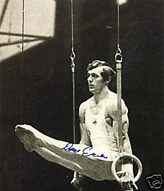

Danut Grecu (ROM)
1974 World R Champion

Medal Total
- Olympic Games: 1 Bronze
- World Championships: 1
Gold, 1 Silver, 1 Bronze
- European Championships: 1
Gold, 1 Silver
- World Cup: 1 Silver, 1
Bronze
Grecu was born on September 26, 1950 in Iasi.
He began gymnastics at age 12, when the PE teacher at his school sent him to a gymnastics club. Grecu's first coach was Octavian Ungureanu. In 1974, he became Romania's first gymnast
to win a gold medal at a world championships. Grecu retired after the 1980
Moscow Olympics and today is the head coach of the Romanian men's national gymnastics team.
He's married and has 2 children (daughter Simona and son Bogdan).
Competition Results
- 1970
- World Championships: 52nd AA
-
- 1971
- European Championships: 31st AA
- ROM-USA Dual Meet: 1st Team, 2nd AA
-
- 1972
- Blume Memorial: 3rd AA
Hungarian International: 4th AA
Intl. Championships of Romania: 1st AA
- Olympic Games: 33rd AA
- USA-ROM Dual Meet: 1st AA
-
- 1973
- Blume Memorial: 1st AA
- European Championships: 10th AA, 2nd R
- International Championships of Romania: 1st R, 1st HB
- University Games: 8th AA, 1st R, 3rd HB
-
- 1974
- ROM-GDR Dual Meet: 2nd Team, 4th AA
- World Championships: 17th AA, 1st R
-
- 1975
- Dynamo Spartakiade: 1st Team, 1st AA, 1st PB
- European Championships: 6th AA, 1st R,
6th HB
- International Championships of Romania: 1st AA,
1st PH, 1st R, 1st PB
- Romanian Championships: 1st AA, 1st PB
- World Cup: 11th AA, 3rd R
-
- 1976
- American Cup: 2nd AA
- Balkan Championships: 2nd AA
- FRA-ROM Dual Meet: 1st AA
- International Championships of Romania: 1st AA
- Milan International: 1st AA
- Olympic Games: 36th AA, 3rd R, 4th V
- Romanian Championships: 1st AA, 1st R 1st PB, 1st HB
- USA-ROM Dual Meet: 1st AA
-
- 1977
- Balkan Championships: 1st AA
- Champions All: 7th AA
- European Championships: 11th AA, 5th HB
- International Championships of Romania:
2nd AA
- Romanian Championships: 1st AA
- University Games: 14th AA, 1st R
-
- 1978
- Balkan Championships: 1st AA, 1st PH, 1st R, 1st PB
- Dynamo Spartakiade: 1st AA, 1st R, 1st PB, 2nd PH
- GDR-ROM Dual Meet: 2nd AA
- International Championships of Romania: 2nd AA, 1st R
ITA-ROM Dual Meet: 1st AA
- Romanian Championships: 2nd AA
- World Championships: 24th AA, 3rd R
- World Cup: 11th AA, 2nd R
-
- 1979
- Balkan Championships: 1st AA, 1st R, 2nd PB
- CSSR-ROM Dual Meet: 4th AA AA
- World Championships: 23rd AA, 2nd R
- World Cup: 17th AA, 6th R
-
- 1980
- International Championships of Romania: 1st AA, 1st R,
3rd PB, 3rd HB
- Olympic Games: 9th AA, 6th R
This page was last updated on February 28, 2021.
© Gymn Forum